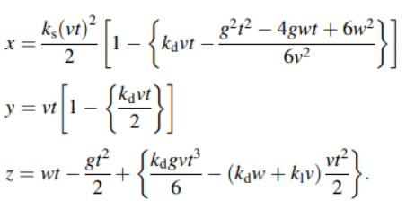
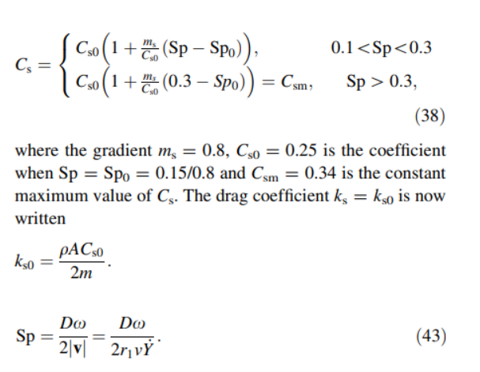

Rangos De Inputs
Velocidad Inicial (0-1000) m/s
Velocidad Angular (0-100) rad/s
Phi (0-360)°
Theta (0-360)°
Miembros Del Grupo
Vicente Espinosa
Milan Vrsalovic
Gullermo Murillo
Cristobal Zuñiga
Parametros Fútbol
Masa balon: 0.45kg
Diametro balon: 0.22m
Area balon: 0.039 m^2
Distancia arco: 11m
Ancho arco: 7.32m
Alto arco: 2.44m
Parametros Tenis
Masa balon: 0.0577kg
Diametro balon: 0.067m
Area balon: 0.0141 m^2
Largo cancha: 23.78m
Ancho cancha: 8.23m
Alto malla: 1.07m
PRINCIPALES FORMULAS

